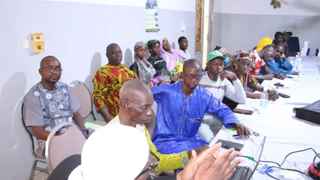
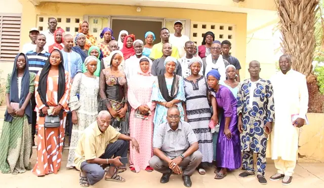

Clubs d'écoute communautaires Dimitra — FAO, 2016-2026
Expert national en animation et suivi-évaluation des Clubs d'écoute communautaires Dimitra, au Mali.
Le contexte et mon rôle
Les Clubs d'écoute communautaires Dimitra sont un mécanisme de dialogue et d'action collective, appuyé par la FAO, qui s'appuie sur les radios locales. De 2016 à 2026, j'ai assuré au Mali l'animation et le suivi-évaluation des clubs : formation des leaders et des agents d'encadrement, coaching des facilitateurs des organisations partenaires, suivi de l'impact.
Les clubs couvrent 59 communes, 26 cercles et 14 régions (toutes sauf Douentza, Dioïla, Taoudénit, Kidal et Koutiala).
Je représente aussi le Mali à une dizaine d'ateliers et séminaires internationaux sur l'approche : coopération sud-sud des Clubs, alliance méthodologique entre Clubs et champs écoles agropastoraux (CEAP), Clubs d'écoute et engagement communautaire.
Les chiffres clés
Chiffres issus de mon suivi des Clubs Dimitra, 2016-2026.
Focus : formation des leaders à Kayes et Kita, juin 2026
Dans le cadre du Projet Paysages Résilients, Productifs et Durables (PRPD), mis en œuvre par la Direction Nationale de l'Agriculture (DNA) et la FAO, j'ai animé, comme consultant national, la formation des leaders de Clubs Dimitra, avec M. Souleymane Coulibaly (DNA).
Méthode : approche andragogique, « village de formation » (simulation de gouvernance), « double visage » (diagnostic comparatif des ressources naturelles), simulations et jeux de rôles, synergie Clubs Dimitra, champs écoles agropastoraux et radios locales.



Vidéo de la formation
Atelier de formation des leaders de Clubs Dimitra, Kayes et Kita (2026).
Documents
Documents en français. Projet PRPD : DNA / FAO.
Une mission à confier ?
Un projet à concevoir, une évaluation, une cartographie, un dispositif de suivi à mettre en place ? Parlons-en.